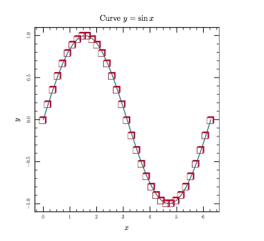

module Tioga::Tutorial::CommandLine
How to run and debug your tioga programs¶ ↑
Our starting place is samples/sample.rb containing the little program
described in #DocStructure. After you 'cd' to the samples
directory, type 'tioga' and hit RETURN. If the
install worked okay, you'll see something like this. Take a moment to
read it since the rest of this section of the tutorial will be based on the
description given here.
This program is a command line interface for the open-source tioga kernel. The tioga kernel is for creating figures and plots using Ruby, PDF, and TeX. Following is a brief description of the tioga command line options. For more information, visit http://www.kitp.ucsb.edu/~paxton/tioga.html. Before any command line information is processed, tioga runs ~/.tiogainit if it exists. The primary use of this file is to set your default pdf viewer command (see below). If there are no command line arguments, or the argument is -h, this help info is output. Otherwise, the command line should start with a tioga file name (with extension .rb). Since the extension is known, you can skip typing it if you like. The remainder of the command line should consist of an optional series of control commands followed by a figure command. Any control commands are done after ~/.tiogainit and before the figure file is loaded. -r file runs the file (using Ruby's require method). -C dir changes the working directory. If there is no -C command, tioga changes the working directory to the location of the figure file. -v prints version information. The figure command comes last and should be one of these: -l output a list of the defined figures by number and name. -<num> make and show figure with index equal <num> (0 <= num < num_figures). -m <figs> make PDFs without showing them in the viewer. -s <figs> make and show PDFs, each in a separate viewer window. -p <figs> make PDFs and show the portfolio as a multi-page document. If the figure command is omitted, then it defaults to -0. If <figs> is omitted, then tioga does all the figures defined in the file ordered by their definition index numbers. Otherwise, <figs> must be either a defined figure name (as supplied to def_figure in the tioga file), or a valid ruby array index number for a figure (can be negative), or a valid ruby range specification selecting a sequence of figures, or a space-less, comma-separated list of figure indices and ranges. For example, -s Plot1 makes and shows the pdf for the figure named Plot1, and -p 5,0..3,-1 makes a portfolio with the figure having index 5 on page 1, followed by pages showing the figures with indices 0, 1, 2, 3, and -1. The viewer for showing PDFs is specified by the $pdf_viewer variable in tioga. The default value can be set by creating a .tiogainit file in your home directory. The .tiogainit file is run before any command line options are processed. Your current setting for $pdf_viewer is repreview. To change it, edit ~/.tiogainit to add the line $pdf_viewer = 'my viewer command'. The command tioga uses to show a pdf is $pdf_viewer + ' ' + full_PDF_filename. You can use the -e control command to try a different viewer setting by doing the $pdf_viewer assignment from the command line.
Let's begin exploring these commands by making a PDF for one of the figures defined in sample.rb – enter this line to the shell (that's a lowercase L after the dash, not the numeral one):
tioga sample.rb -l
You should see this in response
0 Blue 1 Red
This lists the figures that are defined in the file, giving the sequence numbers starting from 0 and the corresponding names. The “show” command (-s) and the “make” command (-m) both take either names or numbers to indicate which figure you want. Let's make a pdf for one of the figures. Type this to the shell.
tioga sample.rb -m Blue
You should get a line of output from tioga saying that it has loaded the sample.rb file, followed by another giving the full file name of the pdf it has made. In addition, the samples directory should have a new subdirectory called 'figures_out'. That was created automatically to hold the output. Look inside it and you should find “Blue.pdf” – open that in your PDF viewer just to see the lovely blue square you've just created.
Now let's have tioga make the second figure and then open it for us in our PDF viewer. You can pick which viewer you want to use, but tioga makes a guess as a default – on linux it guesses “xpdf” and on the Mac it guesses “Preview”. If you want something else, create .tiogainit in your $HOME directory and enter a line of the form:
$pdf_viewer = 'viewer command'
The value of $pdf_viewer followed by a space and the full file name is used by tioga as a command line for the shell to show the pdf file.
Assuming you're happy with the default, or have setup ~/.tiogainit to do something else, enter this line (here we've intentionally dropped the `.rb' extension from the file name since tioga will supply it for us):
tioga sample -s Red
You should be looking at a newly created Red.pdf in your PDF viewer.
And in figures_out you should now find Red.pdf along with the previous Blue one.
Getting files redisplayed after they've been modified¶ ↑
Let's suppose that you're working on sample.rb to pick the right colors. Open the ruby file sample.rb in your text editor. If necessary, get the current version of the Red figure in a viewer window again:
tioga sample -s Red
In the editor, change the line in after 'def red' from this
t.fill_color = Red
to a different color, green for example:
t.fill_color = Green
after you've made that edit and saved the file, so back to the shell. With the previous Red.pdf visible in the viewer, reenter the command:
tioga sample -s Red
It will rebuild Red.pdf and call the viewer to redisplay it. So, the question is “What's in the window?” – are you looking at the new version with a green square or the old version with it's red square? It all depends on how the viewer decides to treat a request to open a file that it already is showing. At the time of writing, xpdf on linux reloads the file while Preview on the Mac doesn't. But as part of the tioga installation we've installed an AppleScript that asks Preview to do Revert to update the image. The default $pdf_viewer command on the mac runs that AppleScript, and, with a little luck, it all works to redisplay the pdf as we want. If that is working and you're looking at the new version of the PDF, great – you can skip the rest of this section. If not, read on for suggestions about how to deal with the Preview problem on the Mac.
Before the script can do it's thing, you may need to enable AppleScripts on your machine.
Do the following if you're uncertain.
1) In Apple Menu, open System Preferences... 2) In the System section of the preferences panel, click on "Universal Access" to open that section. 3) At the bottom of Universal Access, check the box for "Enable access for assistive devices", then close the window.
That takes care of enabling AppleScripts in general, but you may still need to tell Preview to allow script access. If Preview seems to be ignoring our Open/Revert script, enter this line to the shell to change a flag in Preview's settings:
defaults write /Applications/Preview.app/Contents/Info NSAppleScriptEnabled -bool YES
Commands for operating on all of the figures at once¶ ↑
Doing one figure at a time is very useful when you're working to make it look just right. But at other times, you want to turn the crank on the entire set of figures that are defined in the file. Both the show and the make commands will do this if you don't give them a specific figure to do. In other words, if you just do -m without any following name or number, all the pdfs will be made, and if you just do -s, they'll all be made and opened in separate windows in the viewer.
Before trying this, let's quit the viewer just to confirm that is will be launched properly. Then do
tioga sample -s
You should now have both figures displayed in viewer windows.
If the file defines more than a couple of figures, it can be very useful to have them combined in a single multi-page pdf file for viewing. The “portfolio” command (-p) does this for you. First, it makes all of the pdfs (same as -m), and then it uses the pdfpages latex package to create a portfolio pdf.
tioga sample -p
With luck, your pdf viewer will even provide thumbnails for the figures.
The Edit-View-Edit cycle¶ ↑
Let's look at a more interesting figure. In the samples directory, find sine.rb and open it in your text editor. There's a lot going on here that won't make sense yet – we will start getting into the details in the next section of the tutorial – but we can still have some fun with it now. Go to the end of the file where the 'exec_plot' method is defined. We are going to make some changes to alter the appearance of the figure. First, however, let's see what it looks like now. Enter this to the shell:
tioga sine
You should now be viewing a plot of a blue sine wave going from 0 to 2 pi with the title “Curve y = sin x”. Well, actually, it's just a set of straight lines connecting some values of sin(x) sampled uniformly in x, but for this example that's good enough.
Leaving the pdf still in a viewer window, go back to the editor. Find where it says “t.show_polyline(xs,ys,Blue)” and change Blue to Red. Then redo the shell call on tioga. Now the sine curve should be red. Right? Presuming that you have command line history, you should only need to type something like UpArrow and Return (perhaps preceeded by click to get the input focus from the editor to the shell) to go from saving your edits to looking at the new pdf. After taking a look at the pdf in the viewer window, it's back to the editor to make another change. That's the Edit-View-Edit cycle, and the goal is to make it as quick and painless as possible. Here's another example to show how it goes in tioga.
Let's consider broadening our palette – type this to the shell:
tioga figures/figures.rb -s Colors2
Before considering the result, notice that it isn't necessary to 'cd' to the directory containing the ruby file we want to see. The current working directory will automatically be set by tioga based on the file name. Now, back to Colors2.pdf in its viewer window: you should be looking at a page of color samples. Pick one you like and enter the name in the call on show_polyline in the sine.rb window. Save the file and redo 'tioga sine' in the shell. By the way, you can browse the predefined color choices by opening ColorConstants. And if you don't find what you want there, you can always specify colors using RGB triples.
Now let's add markers to show the data points on the plot. Right after show_polyline there's a call on show_marker. Change the 'if false' to 'if true' to turn it on, and again redo 'tioga sine' in the shell. You should see a string of blue asterisks along the curve.
What other kinds of markers are available? Do the following to show a figure with the standard markers:
tioga figures/figures.rb -s Marker_Names
Still want more options? Okay, do this:
tioga figures/figures.rb -s Dingbats
These are given in MarkerConstants where it tells how to use a dingbat. Let's change the figure to use number 114 to mark points on the curve. Find the line in sine.rb where it says
'marker' => Asterisk,
and replace it by
'marker' => [ZapfDingbats, 114],
While you're at it, change the marker color to Crimson, set the line color to Teal, and then redo 'tioga sine' in the shell. The result should look like this.

Debugging your tioga figures¶ ↑
To get an idea of the debugging process, let's introduce some of the usual kinds of bugs into the sine.rb program to see what happens. We'll start with a syntax error that prevents the file from loading properly. Find the line in the exec_plot method that calls do_box_labels and remove the final ')' from the line. Now when you do 'tioga sine' you should get something like this:
loading /Users/billpaxton/tioga/samples/sine.rb
ERROR: load failed for /Users/billpaxton/tioga/samples/sine.rb
/Users/billpaxton/tioga/samples/sine.rb:64: parse error, unexpected tIDENTIFIER, expecting ')'
xs = @data[0]; ys = @data[1]
^
Can't build pdf because failed to define any figures.
The indented lines hold the important information: the problem was discovered on line 64, it was a parse error, and ruby found an identifier when it was expecting ')'. With those clues, it's not too hard to fix things.
Put the ')' back where it belongs and we'll go the to next kind of problem. Remove the final `s' from 'do_box_labels' and rerun sine. Now you'll get a message like this:
undefined method `do_box_label' for #<Tioga::FigureMaker:0x1d271c> /Users/billpaxton/tioga/samples/sine.rb:63:in `exec_plot' /Users/billpaxton/tioga/samples/sine.rb:27:in `initialize' ERROR while executing command: #<Proc:0x001d087c@/Users/billpaxton/tioga/samples/sine.rb:28> Sorry: Empty plot! [version: CVS_version] Failed during attempt to create pdf file.
Again, we get the information we need to find the problem: the method 'do_box_label' is undefined, and the call to it is on line 63.
Put the `s' back, and we'll look at the final kind of bug, one that shows up when TeX is running. In the same line in sine, change `$y$' to `$y'. Recall that text such as this gets passed along to TeX, and the `$' tells TeX to enter or leave math mode. By removing the closing `$' we'll make TeX very unhappy. Here's the output:
ERROR: pdflatex failed.
! Extra }, or forgotten $.
<argument> \tiogasetfont {$y\BS }
l.6 ...{\makebox(0,0)[cB]{\tiogasetfont{$y\BS}}}}}
! Extra }, or forgotten $.
\@imakepicbox ...t@ #1\unitlength {\mb@l #4\mb@r }
\mb@b \kern \z@ }
l.6 ...{\makebox(0,0)[cB]{\tiogasetfont{$y\BS}}}}}
ERROR: invalid pdf file.
This time we don't get a specific line number in the tioga file, but we still get some good hints. TeX suggests that either we have an extra `}' or we've forgotten a `$'. Then it outputs the line `<argument> tiogasetfont {$yBS }' that contains the problem line of text `$y'. Clues like that are typically enough to let you quickly find the problem.
When there is a failure while running TeX, the temporary files are not deleted since they might contain helpful hints. So if you now list the files in the samples directory, you'll find several files whose name starts with 'sine':
'sine_figure.pdf' holds the graphics for the figure (open it in your pdf viewer to see). 'sine_figure.txt' has the TeX commands to place the text in the figure. 'sine.tex' has the little TeX file created by tioga to drive pdflatex. 'sine.log' is the pdflatex log.
During normal, error-free, running, these files are all removed automatically. But after an error while executing in pdflatex, you'll have to delete them yourself.